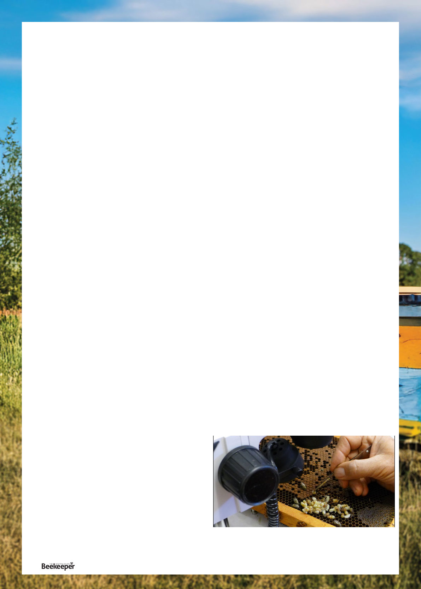

rules for its host-parasite relationship with the mite, focusing
upon limiting the mite’s opportunities for reproduction. As best
I can tell, here is the contract:
1 Don’t waste your time trying to reproduce in our worker
brood—our larvae will sacrifice themselves if you do. (So
far, we haven’t seen this to any extent in Apis mellifera.)
2 We’ll allow you to reproduce solely in our drone brood,
under the condition that we’ll monitor for any signs of stress
to that pupa (through a sniffing hole in the capping). Harm
that pupa, and we will entomb you in a waxen grave. (Apis
mellifera has yet to evolve a sniffing hole, and generally
doesn’t uncap infested drone brood, but does remove sick
worker brood.)
3 And we’ll further restrict your reproduction by rearing
drones only from time to time. (Apis mellifera unfortunately
rears drones so long as there is a pollen flow going on.)
4 At all times we will make your life miserable by aggressive
grooming and biting. (Despite this, some mites survive for
a long time in Apis cerana colonies.)
Apis cerana likely also uses additional traits to keep varroa
in check as a minor parasite, and some tools that our bees
don’t have in their arsenal. But there‘s more than one way to
skin a cat, and Apis mellifera has come up with other tricks —
notably forms of disruption of mite reproduction (uncapping),
“suppression of mite reproduction” (SMR),9 or hygienic removal
of infested pupae (VSH), apparently triggered by “sacrifice me”
signals from the pupae.
Social Apoptosis
In societal species (notably eusocial insects with a soldier
caste), individuals can sacrifice themselves for the benefit of
the colony as a whole (as a honey bee does when it stings in
defense of the hive).10 This is analogous to the altruistic death
of the cells that line your gut in response to getting infected
by a pathogen (they sacrifice themselves for the good of your
body before the pathogen can reproduce). In Apis cerana,
the worker larvae appear to do this in response to a protein
in varroa saliva;11 and drone pupae by emitting a scent signal.
Hypothetical example: Imagine a strain of honey bees in
which any worker that detected a mite on its body immediately
flew away not to return:12 varroa would be unable to exist in
that colony.
The second-best choice would be to limit the mite’s ability
to reproduce (varroa’s Achilles’ heel). The worker larvae of
mite-resistant strains of Apis mellifera may not directly com-
mit altruistic suicide, but appear to instead emit a “sacrifice
me” pheromone that triggers uncapping and perhaps hygienic
removal.13
Re-Evaluating Selective Breeding Strategies
Over the years, beekeepers and researchers have tried a vari-
ety of different approaches to selectively breed for mite-re-
sistant, mite-tolerant, or “survivor” bloodlines.14,15,16,17,18 The
simplest is to copy the ruthless hand of Mother Nature by let-
ting the bees and mites duke it out and then breeding from the
queens of any colonies that survive.19
There are a few problems with this method:
1 If you don’t start with a breeding population that already
carries some alleles for resistance, your entire population
may die (as happened on Santa Cruz Island20).
2 Or you may wind up with bees that maintain small colonies
and swarm a lot, as happened in the Gottland program.21
3 Or the resulting stock may be more “spicy” than desired
(notably with Africanized stock).
4 But the main problem is that so few colonies may survive
the initial vetting process, that you don’t have enough col-
onies left to continue the program (or stay in business).
This method has worked informally in South Africa,22 and
Cuba,23 and more formally in John Kefuss’ operation in France
(Kefuss coined the name “The Bond Method” after the James
Bond movie “Live and Let Die”). It’s also having results in many
feral populations, and with some of the “treatment free” bee-
keepers who catch feral swarms.
Practical application: The Bond Method is very simple,
and can work, but results in the unnecessary death of many
colonies. There is no need to punish colonies with an ugly
death (and to lose most of your stock each year) when all
you need to do is to demote and replace the queens of
non-resistant colonies.
Programs Selecting for Specific Traits
Rather than the live-and-let-die approach, others have
selected for specific traits observed to be associated with mite
resistance:
• Varroa-sensitive hygiene (VSH) — bees that remove mite-in-
fested pupae
• Mite non-reproduction (MNR or SMR) — proportion of mites
that fail to reproduce (Harbo assay, Figure 3)
• Hygienic behavior — freeze-kill or unhealthy brood odor
(UBO) assays for pupal removal
• Grooming behavior — mite-biting assays, typically on sticky
boards
• Uncapping-recapping behavior — using Veet waxing strips
• Post-capping stage duration — effective for Apis capensis
• Marker-assisted selection — screening for genetic markers
associated with resistance24
There’s a problem with selecting for only a single, specific
trait — no one trait alone is likely to dependably confer resist-
ance. Resistant colonies hit the mite from several directions,
and the more different blows, weapons, and techniques in their
genome, the better!
Reviews of the success of selection methods
Over the past few years, a number of research groups have
come to the conclusion that taking the shortcut of using the
assessment of only a single trait as a proxy for varroa resistance
has had poor success.
As stated by Eynard:25
• Figure 3. Some proxies for mite resistance are time-consuming
and tedious to perform, and select only for a specific trait, not for
a colony’s overall success at resisting mite buildup.
18 |
| Vol. 127 | No. 4